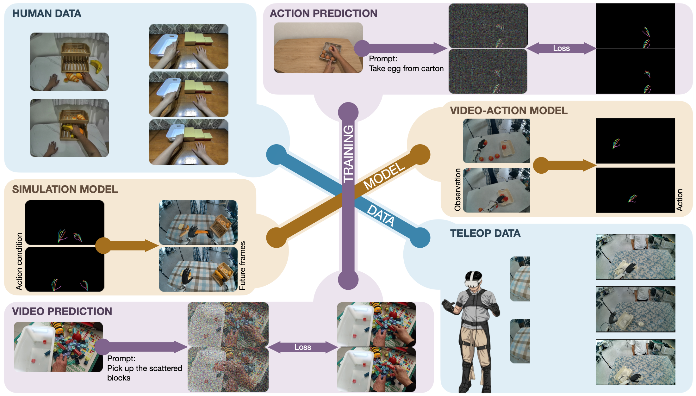
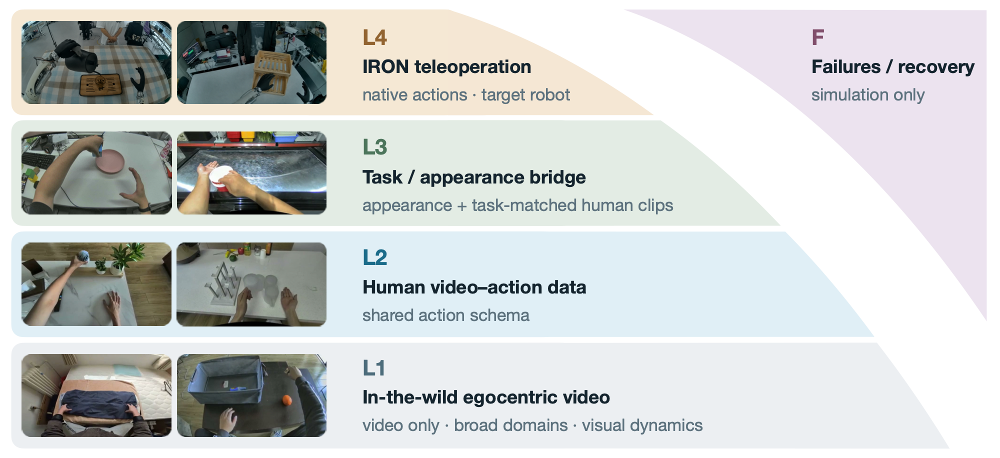
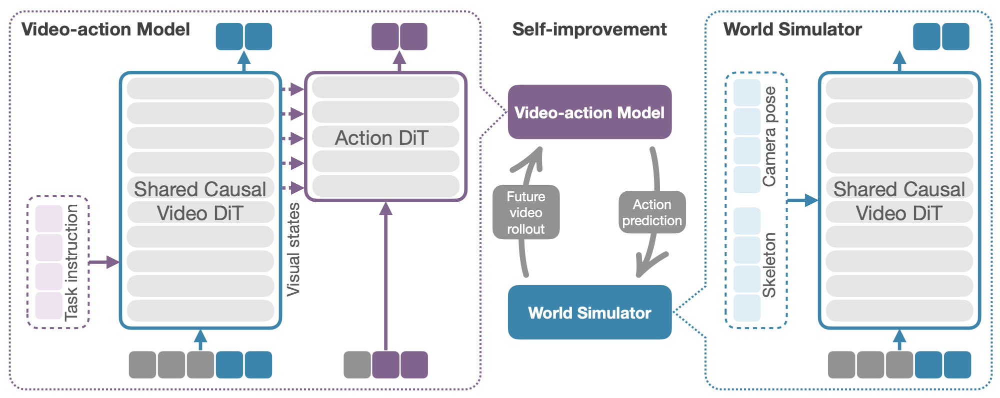
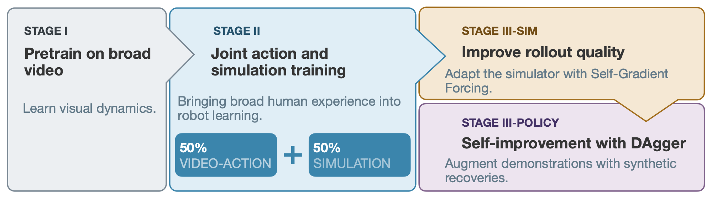
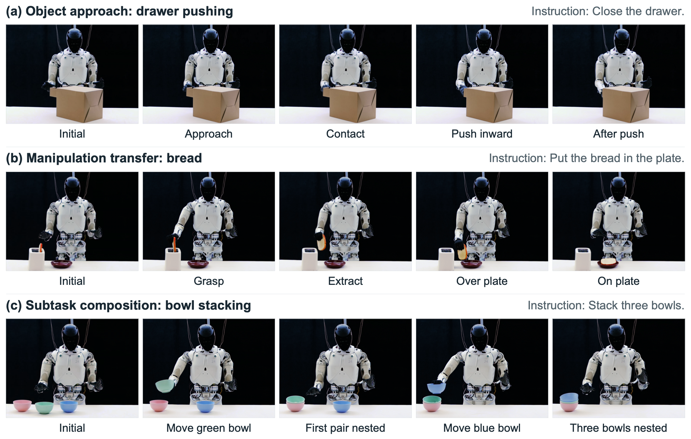
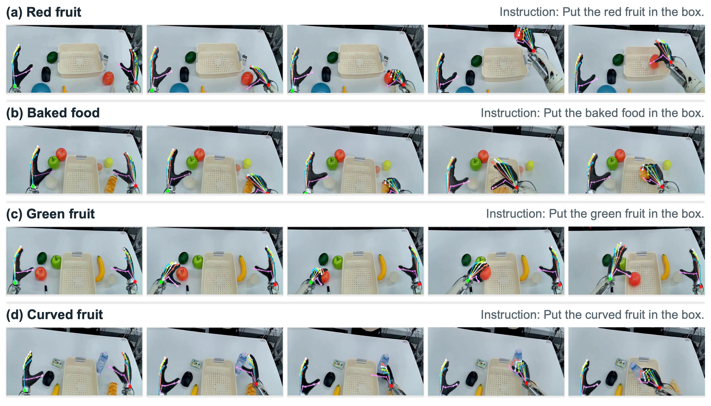

{kind=link}
Instruction following
Select the green apple
“pick up the green apple and put it in the basket.”
The instruction specifies the green apple as the target.
XPENG ROBOTICS
Joint World and Action Modeling fromHeterogeneous Experience
XPACE is a unified embodied world model that serves as both a world action model, jointly predicting executable robot actions and future video, and a world simulator, predicting the visual consequences of prescribed actions. A shared video backbone learns visual dynamics from action-unlabeled video and jointly learns video and action prediction from action-labeled human and robot demonstrations. A coarse-to-fine curriculum progressively emphasizes robot control while retaining human experience, allowing the policy to learn behaviors beyond those covered by robot demonstrations. To improve the policy further, XPACE adapts its simulator to self-generated context, synthesizes deviation–recovery trajectories around expert demonstrations, and fine-tunes the policy on filtered recovery examples. Experiments on XPENG’s IRON humanoid show improved robustness, transfer of human-observed skills to tasks absent from robot demonstrations, and further gains in real-world task completion from simulation-generated recoveries.

Choose the green or red apple with a language instruction.
Instruction following
“pick up the green apple and put it in the basket.”
The instruction specifies the green apple as the target.
Instruction following
“pick up the red apple and put it in the basket.”
Change the instruction to select the red apple instead.
Object approach, manipulation transfer, and sequential subtask composition.
Object approach
“Close the drawer”
Approach, contact, and push a drawer absent from robot training data.
Manipulation transfer
“Put the bread in the plate.”
Move bread from a toaster to a plate in a task absent from robot demonstrations.
Sequential composition
“Stack three bowls.”
Complete two successive placements under a single task instruction.
From heterogeneous experience to shared world and action modeling, then simulation-driven policy improvement.
XPACE organizes 5,000 hours of embodied video into four complementary layers: broad egocentric video, human video–action data, task- and appearance-aligned bridge data, and IRON teleoperation. Multi-level captions connect episode goals with local actions, while a shared action schema represents human and robot end-effector poses, hand articulation, and torso/camera poses. A separate failure set supplies unsuccessful, low-progress, and recovery trajectories exclusively for simulation; their actions are excluded from policy imitation.

XPACE uses an asymmetric mixture-of-transformers (MoT) with a causal Video Transformer shared by policy and simulation. In video–action mode, visual history and a task instruction condition future-video prediction; an Action Transformer reads multi-level video features and the current state to predict 16-step action chunks. Embodiment-specific input/output projections map human and robot actions, while action-loss gradients refine the video backbone. In simulation mode, visual history, prescribed skeleton controls, and camera poses condition future video; the action branch is inactive and no language instruction is supplied.

Stage I adapts the pretrained video backbone to embodied video without action supervision. Stage II adds the action branch and samples video–action or simulation mode with equal probability at each update, using flow-matching objectives. Its three phases move from broad human co-training, through increased bridge and robot supervision, to target-robot co-training.
Human demonstrations, bridge data, and action-unlabeled video remain in the final mixture to limit overfitting and forgetting. Policy captions shift from dense descriptions toward original and paraphrased task instructions; L1 video retains descriptive captions. Failure data enter simulation updates only, beginning in Phase II-b.

Stage III-sim adapts a simulator copy to self-generated context using self-gradient forcing (SGF). It learns under prescribed skeleton controls and camera poses, reducing the mismatch between teacher-forced training and autoregressive rollouts.
Stage III-policy fine-tunes a separate copy of the Phase II-c policy with 8% synthetic recovery examples and 92% of the original data recipe. The SGF simulator stays fixed; both branches start from Phase II-c, and only recovery data pass from simulator to policy.
Simulation fidelity, real-robot control, and the contributions of human experience and synthetic recoveries.
Simulation and offline action prediction use 19 evaluation subsets collected separately from training. In-distribution (ID) subsets cover representative pick-and-place interactions; out-of-distribution (OOD) subsets vary scenes, objects, instructions, and behaviors. Some behaviors absent from robot demonstrations are covered by human data. The subsets retain their collection-based grouping, rather than uniformly task- or scene-disjoint splits.
How well does the model predict controlled futures, and how efficiently can it roll out under its own generated context?
Token addition gives the best PSNR, SSIM, and DINO scores on both splits, and the best OOD motion consistency. Against AdaLN, PSNR improves by 0.95 dB on ID and 1.11 dB on OOD without increasing inference cost. These four variants share the same video-model initialization and L4+F training data.
| Injection | PSNR ↑ | SSIM ↑ | OFS ↑ | DINO ↑ | Latency ↓ | Memory ↓ |
|---|---|---|---|---|---|---|
| In-distribution | ||||||
| AdaLN | 17.12 | 0.5818 | 0.3864 | 0.9770 | 61.25 | 41.41 |
| Cross-attention | 16.29 | 0.5631 | 0.3308 | 0.9764 | 59.60 | 41.27 |
| Channel concat. | 17.62 | 0.5902 | 0.3760 | 0.9732 | 57.76 | 41.27 |
| Token addition | 18.07 | 0.6030 | 0.3854 | 0.9809 | 57.68 | 41.27 |
| Out-of-distribution | ||||||
| AdaLN | 16.88 | 0.5818 | 0.4500 | 0.9678 | 59.68 | 41.41 |
| Cross-attention | 16.31 | 0.5703 | 0.3723 | 0.9688 | 59.50 | 41.27 |
| Channel concat. | 17.47 | 0.5865 | 0.4565 | 0.9646 | 57.13 | 41.27 |
| Token addition | 17.99 | 0.6109 | 0.4632 | 0.9765 | 56.96 | 41.27 |
PSNR is in dB. Evaluation on 97-frame videos with 50 denoising steps. Best quality metrics are highlighted within each split. Latency is in seconds and memory in GB; measurements use four significant figures. OFS measures optical-flow agreement; DINO measures visual-feature similarity. ↑ Higher is better; ↓ lower is better.
SGF improves all four quality metrics at both horizons on ID and OOD videos. At 193 frames, PSNR gains 0.89 dB and 1.01 dB, with 3.00× and 3.30× faster generation. The comparison includes a change from 50 sampling steps for the baseline to 8 for SGF; memory use is essentially unchanged.
| Method | PSNR ↑ | SSIM ↑ | OFS ↑ | DINO ↑ | Latency ↓ | Memory ↓ |
|---|---|---|---|---|---|---|
| 97 frames · In-distribution | ||||||
| Baseline | 18.07 | 0.6030 | 0.3854 | 0.9809 | 57.68 | 41.27 |
| Baseline + SGF | 19.17 | 0.6394 | 0.5696 | 0.9848 | 20.95 | 41.27 |
| 97 frames · Out-of-distribution | ||||||
| Baseline | 17.99 | 0.6109 | 0.4632 | 0.9765 | 56.96 | 41.27 |
| Baseline + SGF | 18.72 | 0.6347 | 0.5467 | 0.9799 | 20.00 | 41.27 |
| 193 frames · In-distribution | ||||||
| Baseline | 16.94 | 0.5651 | 0.4035 | 0.9782 | 119.7 | 44.96 |
| Baseline + SGF | 17.83 | 0.5976 | 0.4797 | 0.9825 | 39.86 | 44.94 |
| 193 frames · Out-of-distribution | ||||||
| Baseline | 17.74 | 0.6009 | 0.4878 | 0.9755 | 120.2 | 44.96 |
| Baseline + SGF | 18.75 | 0.6350 | 0.5563 | 0.9797 | 36.44 | 44.96 |
PSNR is in dB. Baseline + SGF is the token-addition baseline further trained with SGF. The baseline uses 50 ODE steps per chunk; Baseline + SGF uses 8. Best quality metrics are highlighted within each horizon and split. Latency is in seconds and memory in GB.
The final recovery simulator applies SGF to the full Phase II-c XPACE checkpoint. It is distinct from the L4+F conditioning baseline above; Table 3 reports its fidelity on the same evaluation videos.
| Frames | PSNR ↑ | SSIM ↑ | OFS ↑ | DINO ↑ |
|---|---|---|---|---|
| In-distribution | ||||
| 97 | 19.73 | 0.6612 | 0.6007 | 0.9853 |
| 193 | 18.11 | 0.6086 | 0.5170 | 0.9834 |
| Out-of-distribution | ||||
| 97 | 18.44 | 0.6274 | 0.5642 | 0.9758 |
| 193 | 18.05 | 0.6142 | 0.5552 | 0.9705 |
PSNR is in dB. Quality of the full Phase II-c checkpoint after SGF adaptation, evaluated on the same ID and OOD videos at both horizons. This fixed simulator generates the recovery data used for policy self-improvement.
Real-robot performance is followed by skill transfer, controlled data ablations, coverage analysis, and simulation-driven improvement.
XPACE achieves 68.3% average success across banana pick-and-place, water pouring, and bowl stacking, compared with 40.0% for DreamZero and 6.7% for GR00T. Bowl stacking is absent from robot demonstrations but present in human and bridge data. Supervised corpora are matched, while XPACE alone receives Stage I video adaptation: this compares complete models and training recipes.
Full-data training raises success from 50% to 80% on banana pick-and-place across five fixed positions, and from 30% to 50% on a separate block-to-box task with unseen distractors. This ablation removes human action supervision and unsupervised video together; the studies below examine their contributions separately.
Qualitative executions show three levels of transfer: approaching and pushing a drawer absent from robot training; moving familiar bread from a toaster to a plate, a task absent from robot demonstrations; and nesting three bowls through two successive placements under one instruction. These examples illustrate object approach, manipulation transfer, and sequential task composition.

With identical action fine-tuning, even one-eighth of Stage I video exposure lowers benchmark action loss by 8.1%; full exposure reaches 12.5%. The zero-exposure baseline retains the pretrained video-model initialization. This measures the benefit of additional video adaptation under a fixed action-training budget; video exposure and pretraining compute increase together.
Stage I exposure fraction r
Keeping human data in the final training mixture reduces benchmark action loss by 14.0% relative to robot-only, compared with 8.5% when human mid-training is followed by robot-only fine-tuning. The two human-data recipes share their mid-trained initialization, learning rate, and final-stage budget, showing that continued human supervision matters beyond initialization.
| Recipe | Benchmark Δ action loss ↓ | Checkpoint s.d. |
|---|---|---|
| Robot-onlyReference | 0% | — |
| Human mid-training then robot-only FT | −8.5% | 2.7 |
| Human–robot co-training | −14.0% | 2.8 |
Held-out action-loss change relative to robot-only, averaged over nine late-training checkpoints. Standard deviation is in percentage points and describes checkpoint variation within a run, not uncertainty across independent seeds.
Grouping the 19 benchmark subsets into eight task-semantic families reveals complementary benefits. Human–robot co-training lowers action loss by 10.0% where both sources densely cover the behavior, and by 22.7% where robot demonstrations lack it but human data are dense. Sparse human coverage brings smaller gains; behaviors absent from both sources show no comparable benefit. These coverage strata are secondary analysis groupings, distinct from the original dataset partitions.
Action-loss reduction vs. robot-only (%; higher is better)
Fine-tuning with an 8% mixture of simulated recoveries raises mean real-robot success from 61.7% to 86.7% and task progress from 0.81 to 0.93. Water pouring improves most, from 50% to 95% success. The policy copy trains in less than one day while the simulator stays fixed; the before/after comparison includes the additional fine-tuning budget.
Policy actions drive the simulator, whose generated frames become the next observations. These rollouts expose instruction-following errors before physical testing: the examples below select the correct targets in the first two rows, but a red fruit instead of a green fruit and a bottle instead of a curved fruit in the last two.

The team behind XPACE and the citation for our technical report.
Jiacheng Wei*§, Jerry Bai*§, Xiaoyu Yue*, Zidong Wang*, Xiaoyang Guo*†, Cheng Chen, Fanqi Pu, Fan Wu, Zhixu Yue, Yizhuo Li, Feng Qiu, Bo Liu, Yuying Ge, Hui Zhou, Chenyi Chen, Yixiao Ge‡
All authors are with XPENG Robotics.
@techreport{wei2026xpace,
author = {Jiacheng Wei and Jerry Bai and Xiaoyu Yue and Zidong Wang and Xiaoyang Guo and Cheng Chen and Fanqi Pu and Fan Wu and Zhixu Yue and Yizhuo Li and Feng Qiu and Bo Liu and Yuying Ge and Hui Zhou and Chenyi Chen and Yixiao Ge},
title = {{XPACE}: Joint World and Action Modeling from Heterogeneous Experience},
institution = {XPENG Robotics},
type = {Technical Report},
year = {2026},
url = {https://xpeng-robotics.github.io/xpace/},
}{kind=link}
{kind=link}
{kind=link}
{kind=link}
{kind=link}